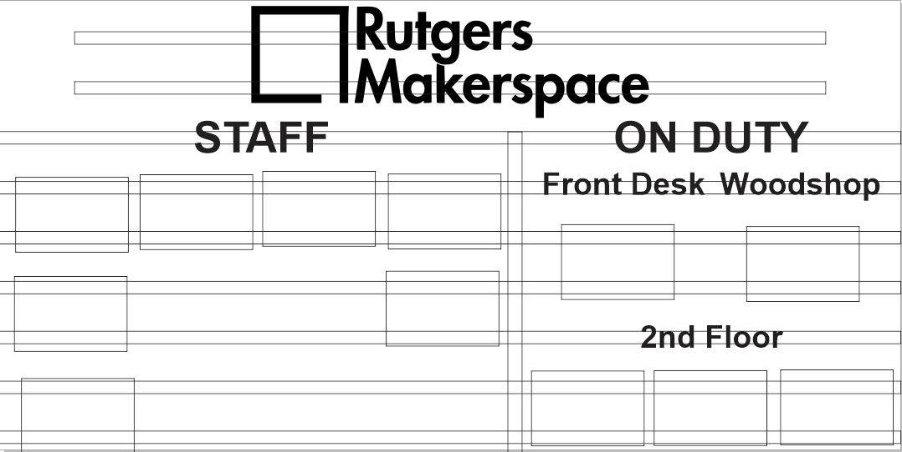

Staff Directory
Organizational Board for Makerspace
What is this thing?
This staff directory is an organizational board that gives visitors and users a better idea of the staff working at Makerspace, their areas of experitise, and who is currently on duty. This helps people find employees that are best able to help them with their individual projects. It also serves as a check up for our manager, so that he can see who is currently on duty, and what skills do employees still have to learn.
I was tasked with building and designing this directory. To do this, I first modeled it roughly in CorelDraw, and then built it using french cleats, laser cut lettering, and nameplates that were UV printed.
CorelDraw
In order to size out the project accurately, I first drew it out in CorelDraw. This would also allow me to get the correct size for the letters, and laser cut them directly.
The total size of the board is 36" tall by 72" wide, which would be able to fit onto the wall near the front desk of the Makerspace. It would also need enough space to hold 15 6" x 9" nameplates that each staff member would have. Additionally, it needed to have two sections: one for "Staff", where everyone would put their nameplates, and one for "On Duty", where people would put their nameplate once they went on shift. The "On Duty" section would also have 3 sub sections depending on where they were stationed: Front desk, woodshop, or 2nd floor, so people could find staff to help them easier.
george.
Nameplates
Each staff member was to be given a nameplate, which would state their name, hours, skillset, and picture so they could be easily identified. This was designed in CorelDraw which could then easily be UV printed.
French Cleats
To mount the nameplate onto the wall, I decided to use French cleats. This would allow the nameplates to be moved around easily and not protrude too far from the wall.
This method proved to be quite difficult. Since the building was built in the 1940s, it was near impossible to find studs. It was a struggle to insert drywall anchors into the wall and keep every single cleat level and perfectly spaced, but I eventually got the hang of it. The cleats were eventually painted white to match the color of the wall behind them.
Lettering
The words for each of the categories were laser cut out of eigth inch plywood. Using the original CorelDraw file, it was easy to use the text as the sizing of the laser cut letters. The words were then spray painted to their final colors: red for Rutgers Makerspace, black for the large categories, and grey for the smaller categories.

Now I'm just waiting for my other staff members to make their nameplates. It's a bit lonely only having George as the other person on the board...